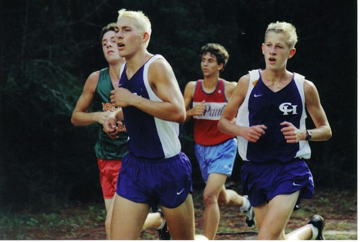
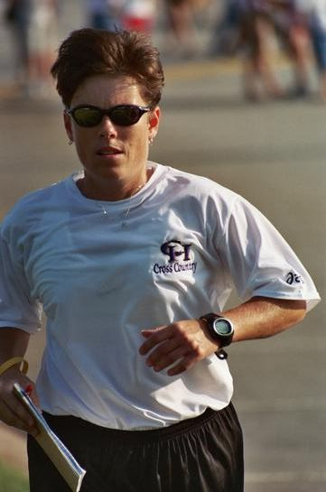

2017 - Our Meets
| Zack Wansley Cross Country Clash | |
|  |
Saturday Aug. 19 @ Clinton Preserve. Clink the link above to sign up! |
| Atlanta Classic | |
Saturday Sept. 24 @ Clinton Preserve. Click the link above to sign up! |
|
Coaches:
Coach Kelly Williams has been at the helm since CHHS opened in 1998. She has guided the XC teams to 3 Georgia State titles (and won 3 more as the head of the Track program).
Coach Zach Graham is in his 2nd year at CHHS.
contact & follow us!
Find us on Facebook: |
 |
Follow us on twitter: |
 |
Email Coach Williams: |
 |